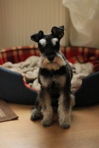

Šķirnes vēsture
Miniatūrais šnaucers radīts krustojot vidējo šnauceru, afenpinčeru un iespējams arī pūdeli. Tā oriģināli radīta Vācijā, un nosaukums cēlies no vācu valodas vārda „Schnauze”- latv.val. purns. Tas bijis lielisks žurku mednieks, bet mūsdienās kļuvis par populāru ģimenes kompanjonu. Šnaucers ir talantīgs dzinējs, mednieks, sargsuns un triku meistars.

Šķirnes apraksts
Miniatūrais šnaucers ir mazs, proporcionāls suns, ar garu galvas formu un izteikti kuplām uzacīm, ūsām un bārdu. Biezās uzacis un ūsas parasti tiek apgrieztas, lai uzsvērtu suņa stūrainās proporcijas. Priekškājas ir taisnas, asti parasti apgriež jau agrā kucēnu vecumā. Ovālās acis ir tumšas, ausis V-formas, brīvi nokarājas uz priekšu vai arī ir apgrieztas un stāvošas. Šnauceram ir gara galva, spēcīgi žokļi, šķērveida sakodiens un labi attīstīts, melns deguns. Apmatojuma krāsa var būt būt- sāls ar pipariem, melna, balta, melna ar sudraba krāsas virsējo apmatojumu un mīkstu pavilnu.

Kopšana
Dzīvniekam vajadzētu aplīdzināt apmatojumu vismaz 2 reizes gadā- rudenī un pavasarī, taču šo darbu labāk uzticēt profesionālim. Regulāri jāapgriež uzacis un ūsas, un pēc katras maltītes jānotīra bārda. Apmatojums pats praktiski neizkrīt, tādēļ tas ir piemērots suns alerģiskiem cilvēkiem.


Temperaments
- Enerģisks
- Sirsnīgs
- Paklausīgs
- Rotaļīgs
- Aizsargājošs
- Modrs
Nepatīkamas iezīmes
- Iespējamas acu slimības
- Iespējama aptaukošanās
- Iespējams saslimt ar aknu slimībām